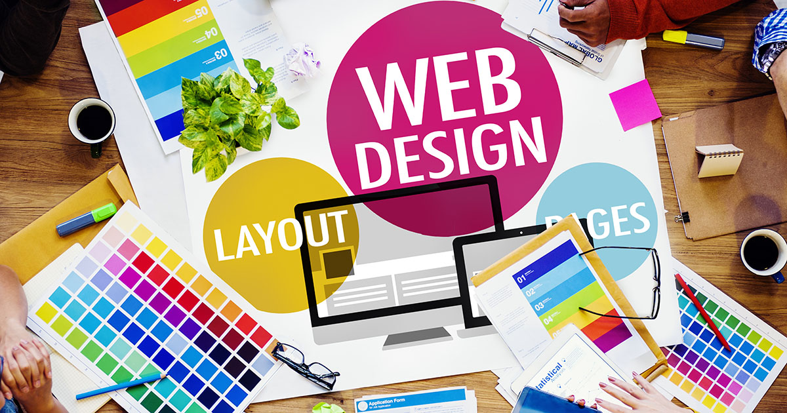

About Me
 my name is Fadia. I'm a software engineer and originally from Iraq. I live in Canada since 2013 and the reason that I came to Canada because my husband got a schoolarship to continue his PHD in civil engineering here in Ottawa at Ottawa University. I'm a mom of three boys.
after a a long carrier journy as a software engineer, I chose IMD because I'm eager to learn some skills in design, especially in web design and mobile interface design. As a learner, My main gaol is to use my skills in coding and design to help people with learning disabilities to use technology resources through creating a special user interface that would be accordant with their needs. I’m still working in establishing this goal as it’s demands a lot of hard work and creative achievements.
I’m really optimistic about this field of study. Because exploring new things and gaining more skills should has no limits or boundaries. I've always take this quote of saying as a motivation:Try not to resist the changes that come your way. Instead let life live through you. And do not worry that your life is turning upside down. How do you know that the side you are used to is better than the one to come?
Rumi.
Regarding to hobbies, I like to read about everything. beside that I might sometimes:
- writing quotes
- solving puzzles
- listening to music